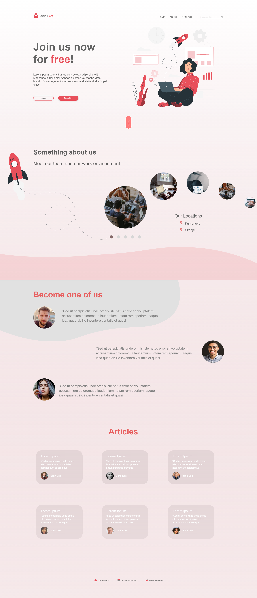

AdobeXD
Web Design All Screens
This project helped me a lot to understand adobexd, the goal of this project was to understand the prototype process, and to learn the logic behind it. For this project I have created a lot of mobile screens, for example the slider on the mobile screens changes slides on arrow as well as the dots under it, I have tried to use a lot of prototype in order to push myself into learning and understanding it more.
